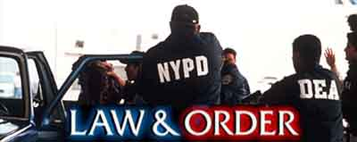

Há quase 17 anos atrás (em 13/09/90) a série de TV Lei e Ordem (Law & Order) estreava na rede de televisão americana NBC, e teve grande repercussão nos Estados Unidos, devido ao formato inovador com que se desenvolvia cada episódio, dirigido por Dick Wolf. Cada capítulo era nitidamente dividido em duas partes. Na primeira meia hora, acontece o crime e a investigação policial. Na segunda metade, entra em cena um elenco totalmente diferente, e o acusado será julgado nos tribunais. É como se fossem dois seriados – um de tema policial e outro de tema jurídico – condensados dentro da mesma produção. A série é transmitida no Brasil pelo canal de cabo Universal Channel.O romantismo com que o mundo policial é tratado no cinema acaba "Quando era criança sempre brinquei de Polícia e Bandido, nunca de Promotor e Bandido" fazendo parte da mente da maioria das pessoas desde a infância, obviamente com mais ênfase no sexo masculino, que delicia-se com a parte operacional da coisa. Não vou discutir aqui o que nos leva a isso, certamente "Froid explica", mas é certo que quase todo mundo já brincou de Polícia e ladrão. Depois crescemos, estudamos e escolhemos outras profissões. Mas alguns acabam caindo por aqui, na Polícia de verdade.
Quando o destino começou a me aproximar do desejo e possibilidade de tornar-me policial, eu resolvi entrar para a faculdade de Direito. A partir daí surgiu outra paixão, com o tal mundo jurídico, mas ainda assim no mesmo tema, já que outra carreira que descobri e passei a admirar foi a de Promotor do Ministério Público, obviamente o criminal.
Foi lançado então concurso para a Polícia Civil do Rio, e eu passei a acompanhar de perto. Um amigo que cursava a CFAP para tornar-se Oficial PM tentou me demover da idéia, argumentou que a Polícia Civil era instituição antiquada, inútil e corrupta, e além disso os salários eram baixos. Eu não servia para ser policial civil. Mas era justamente a Polícia Civil que fazia (ou deveria fazer) o trabalho de investigação que tanto me empolgava. Fiz o concurso.
Na abertura do seriado Lei e Ordem, a narração diz o seguinte:
“No sistema de justiça criminal, o povo é representado por dois grupos separados e igualmente importantes. A Polícia que investiga os crimes, e os Promotores de Justiça que processam o autor do crime. Essas são suas estórias...”
[youtube W0Pdixf5tZM]
- Link para o vídeo se não aparecer acima -
Na realidade brasileira porém isto não ocorre. Aqui a Polícia que investiga os crimes não é tida como importante. Essa é nossa história.Um grande amigo quando era perguntado porque não saia da Polícia Civil sempre respondia “eu quando era criança sempre brinquei de Polícia e Bandido, nunca de Promotor e Bandido”. Hoje ele já decidiu que a única solução é sair da Polícia Civil. Do Rio...